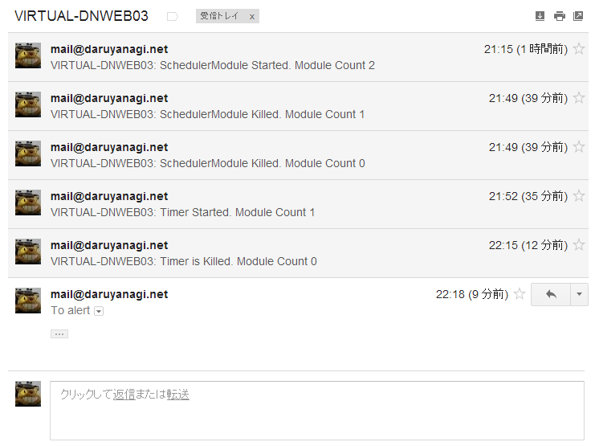

WebMatrix：IHttpModule で定期実行を実装する
公開日：
WebMatrix 3: Twitter Bot （＋リアルタイムログ表示付き）でも作ってみる。 - だるろぐ で System.Timers.Timer を使って ASP.NET の定期処理を実装したのだけど、のいえ先生の neue cc - ASP.NETでの定期的なモニタリング手法 でもう一度実装しなおしてみた。

Web.config
<?xml version="1.0" encoding="utf-8"?><configuration> <system.web> <compilation debug="true" targetFramework="4.0" /> </system.web>
<system.webServer> <modules> <add name="SchedulerModule" type="SchedulerModule"/> </modules> </system.webServer> </configuration>
Web.config でモジュールを登録する。
~/App_Code/ScheduleModule.cs
using System; using System.Threading; using System.Web;public class SchedulerModule : IHttpModule { static int initializedModuleCount = 0; static Timer timer;
public void Init(HttpApplication context) { var count = Interlocked.Increment(ref initializedModuleCount);
if (count != 1) return;
timer = new Timer(_ => { try { System.Diagnostics.Debug.WriteLine("だん！"); } catch (Exception e) { System.Diagnostics.Debug.WriteLine(e.Message); } }, null, TimeSpan.FromMinutes(1), TimeSpan.FromMinutes(1)); }
public void Dispose() { var count = Interlocked.Decrement(ref initializedModuleCount);
if (count != 0) return;
var target = Interlocked.Exchange(ref timer, null);
if (target != null) target.Dispose(); } }
SchedulerModule はこんな感じ。IHttpModule インターフェイス（Init、Dispose）を実装する。

（ExpressWeb で動かして initializedModuleCount をインクリメント・デクリメントをメールで通知するようにしてみたらこんな感じ）
SchedulerModule はいくつも作成（＆いくつも殺される）ので、ちゃんと数をカウントして、タイマーが大量生産されないように管理する必要があるそうな（← ASP.NET のライフサイクルをちゃんとわかってない。確かライフサイクルを書いたポスターがあったはずなので、今度確認しておこう）。